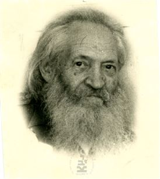
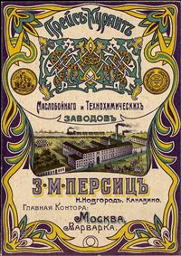
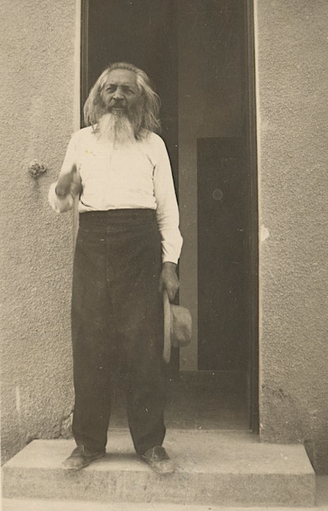

Моше Вильбушевич -- инженер, изобретатель.
В детстве проводил много времени на мельнице отца, экспериментируя с различными механизмами, тщательно изучая теорию и практику в различных областях техники и обогрева. Изучал иудаизм, большое впечатление на него произвели письма брата Айзека, отправившегося с первой алией в Эрец-Израэль в числе билуйцев. В этих письмах были рассуждения о справедливом устройстве общества, одним из условий которого был коллективный труд, об идеях сионизма. Кроме того ещё в раннем возрасте Моше попал под сильное влияние толстовских идей и почувствовал себя виноватым в том, что его семья эксплуатирует рабочих. И когда Моше был в старших классах гимназии, он решил покончить с эксплуатацией по крайней мере на личном уровне и, уйдя из дому, начал работать на мельнице простым рабочим.
Моше с женой Апулией. 1902 г.
В 1892 году Моше женился на Апулии (Поле) дочери Иегуды Коэна. А когда в 1895 году его брат Гдальяху стал владельцем машиностроительного завода в Минске, Моше отправился работать к брату. Через некоторое время к ним перебралась и младшая сестра Маня с целью работать на заводе грузчиком, чего и добилась. А благодаря её активности, вскоре братья познакомились с Григорием Гершуни и его идеями.
В 1899 году Моше был ещё в Минске, а следующие сведения о нем появляются уже из Нижнего Новгорода.
Московский 1 гильдии купец Зелик Мордухович Персиц в 1898 году открыл в Нижнем Новгороде небольшой завод по производству гарного масла, которым вплоть до начала ХХ века заправляли и уличные, и домашние светильники. В условиях довольно жесткой конкуренции Персиц обеспечил себе неоспоримые преимущества, решившись на технологические новшества, которые предлагал и воплощал в жизнь технический директор нижегородских заводов Моисей Владимирович Вильбушевич.
В 1906 г. М. В. Вильбушевич ездил с научными целями в Германию и познакомился с незаконченными лабораторными исследованиями немецких ученых, пытающихся найти практическое применение научному открытию французского химика П. Сабатье — методу гидрогенизации жиров (каталитическому присоединению водорода к сложным эфирам глицерина и ненасыщенных жирных кислот). Метод гидрогенизации жиров был предложен немецкой фирмой «Лепренск-Сивке» и одновременно английским инженером Вильгельмом Норманом в 1902—1903 гг. Самое заманчивое в том методе для Вильбушевича было то, что при положительном завершении исследований они могли иметь возможность из жидких растительных масел получать отвержденные жиры с соответствующими свойствами, а его промышленное использование обеспечивало прочное завоевание рынка. С согласия Персица Вильбушевич купил патент Нормана. К этому времени на заводе была организована химическая лаборатория, а также имелось богатое собрание технических книг и периодических изданий на русском и иностранных языках. По приезде в Нижний Новгород М. В. Вильбушевич совместно с заведующим лабораторией химиком К. А. Рождественским в течение двух лет вели исследования по гидрогенизации жиров. После успешного завершения опытов по насыщению жидких жиров водородом они предложили З. М. Персицу построить новое производство с водородным цехом.

В августе 1909 г. на заводе Персица впервые в России было создано промышленное производство по переработке жидких растительных масел в твердые жиры, названные салолином (сегодня они называются саломасы), т. е. искусственное сало. Процесс насыщения длился 4—5 часов. Вначале насыщали хлопковое и подсолнечное масла, затем льняное, рыжиковое, касторовое, ореховое и рыбий жир. Температура при насыщении иногда доходила до 300°С. Застывший в соответствующих емкостях салолин упаковывался в мешки. С этого момента завод вышел на новый уровень развития.
Маслобойно-химический завод Персица стал пионером в России по переработке хлопкового семени на масло. По предложению Вильбушевича Персиц закупил в Средней Азии миллион пудов хлопкового семени. До этого хлопковое семя шло на удобрение или сжигалось в топках котлов. А Вильбушевич с помощью хлопкового масла решил проблему замены дорогостоящего оливкового. Использование хлопкового масла поставило перед инженерами другую проблему — его рафинации, поскольку масло это было непривычного черного цвета. На заводе производили кислотную рафинацию с последующей щелочной, а затем был внедрен метод щелочной очистки, исключающий излишнюю очистку серной кислотой.
***
Небольшая история: Моше очень сочувствовал рабочему классу и всячески старался помогать нуждам рабочих. В царской России празднование 1 Мая (День Труда) был запрещён, и Моше меняет в документах дату своего рождения на 1 мая и приглашает на частную вечеринку по поводу дня своего рождения 1500 рабочих завода. Против такого «частного» празднования власти не нашли претензий.
***
Кроме хлопкового масла, на заводе вырабатывали рыжиковое, сурепное, подсолнечное масла. Кокосовая копра ввозилась из Цейлона и Сингапура. Позднее для нее были специально установлены три автоматических пресса Крупна. Кокосовое масло шло частично на выработку высших сортов гарного масла. Небольшой инцидент с пролившимися на соседний участок отходами заставил вплотную заняться проблемой утилизации отходов, что привело к очередному изобретению Вильбушевича. Для утилизации отходов растительных масел — фузы — был построен экстракционный цех, а затем вплотную занялись обработкой отходов с целью их утилизации. Кислый гудрон стали омылять щелочью и получать асидол-мылонафт. Он обладает хорошими моющими свойствами и является одним из компонентов мыла. Рафинация темнохлопкового масла поставила задачу найти применение салостоку. После очистки щелочных отходов получали мылонафт, также по своим качествам пригодный для изготовления мыла. Образующие кислотные остатки после их нейтрализации использовались в котельной как топливо. Источник о заводе
24 апреля 1911 года предприятия З.М. Персица были реорганизованы в Волжское акционерное общество маслобойных и химических заводов «Салолин».
В 1912 году Общество открывает в Санкт-Петербурге завод «Салолин», нацеленный на выпуск гидрированных жиров для маргариновых и мыловаренных заводов Санкт-Петербурга и Северо-Западного региона России, Латвии, Литвы, Эстонии. И этот завод самым тесным образом связан с именем Моши Вильбушевича, который за короткий срок наладил крупное масложировое производство, установив самое современное для того времени оборудование: автоклавы для гидрогенизации растительных масел, реторты Вильбушевича для восстановления катализатора, нейтрализаторы в рафинационном цехе. Моша пригласил в помощь для отлаживания производства своего брата Нахума, который проработал там сначала инженером по созданию завода, а затем полтора года техническим директором.
В России первая заводская установка для гидрирования жиров и жирных кислот была построена в 1908 г. изобретателем инженером-химиком Моисеем Вольфовичем Вильбушевичем. Им же были разработаны оригинальная конструкция реакторов для гидрирования и технология получения восстановленного порошкообразного, суспендированного в жире или масле катализатора типа никель на кизельгуре. В 1912 г. М.В. Вильбушевич построил в Петербурге самый крупный в России и один из наиболее современных и мощных по тому времени гидрогенизационных заводов – завод «Салолин». К 1915 г. под его руководством были построены также гидрогенизационные установки в Екатеринодаре (г. Краснодар), Армавире, Казани и Москве (завод «Стеол»).
Моше сделал много изобретений, однако, не смотря на трудолюбие и упорство в самообразовании, он ощущал нехватку теоретических знаний. И чтобы найти теоретическое подтверждение результатов своих экспериментов, он в 40 лет отправился учиться в университетах Швейцарии и других европейских стран
Во время Первой мировой войны он оставил работу на маслозаводе Персица в Нижнем Новгороде и намеревался обосноваться в Цюрихе. Там он посвятил себя изучению философии, медицины и астрономии. А так же был членом дискуссионного клуба, в деятельности которого принимал участие и В. Ленин, с которым он часто спорил по вопросам философии, общества и политики. Вскоре за Мошей закрепилась репутация революционера и социалиста. Когда в России произошла революция, Ленин предлагал им вместе вернуться туда, но Моше отказался. Большевики национализировали банки, и Моисей потерял большое состояние, которое было депонировано в российских банках (доходы от продажи патента на технический маргарин крупным компаниям в Англии и Америке). Однако это обстоятельство как истинного "толстовца" скорее обрадовало Мошу, огорчил его тот факт, что эти средства он обещал вложить в создание кафедры иудаики в университете в Цюрихе.
В 1912 году он впервые посетил Израиль, чтобы изучить возможности создания отрасли. Однако тогда считали, что эта территория должна ориентироваться на развитие сельского хозяйства. Тем не менне Нахум и Гдальяху Вильбушевичи, братья Моши, видели иной потенциал.
В письме Ривке Ахаронсон от 20 марта 1912 года к Авшалом Файнбергу, чья сестра Шошана вышла замуж за Нахума Вильбушевича, брата Моши, написала свое мнение о нём (написанном: Муза) и всей семье Вильбушевичей: "Брат [Наума] Вильбуша - Муза Вильбушевич - ...он был таким же сумасшедшим, как и вся семья". Цила, внучка Гдальяху вспоминает о Моше, что самым интересным персонажем в семье на самом деле был Моше.
1919 году Моша иммигрировал в Эрец-Исраэль. Он прибыл в страну с идеей возвести огромный завод по производству масла, который не только обеспечит все потребности страны, но произведет масло для импорта. Согласно составленному плану завод по производству масла должны были построить в Кейсарии. Одновременно с возведением завода планировалось восстановить разрушенный там порт. Порт был необходим для поступления необходимых исходных материалов и для импорта продукции в Европу. Моше и его младший брат Нахум приобрели значительный участок земли и приступили к подготовке подробного плана возведения завода и порта. Было заказано из Германии новейшее оборудование и одновременно подано военному губернатору прошение о льготном статусе будущего порта в Кейсарии. Это прошение составил Зеев (Владимир) Жаботинский, который обосновался тогда в Иерусалиме и получил права адвоката. Однако прошение было отклонено.

Моше перед входом в лабораторию на горе Скопа. 1932 г.
Тем не менее идея основания завода была реализована в Хайфе. Вместе с братьями Нахумом и Гдальяху, они запускают производство нового, разработанного Мошей технического сорта маргарина на заводе «Шемен». Совместно с братом Гдальяху проектирует здания цементного завода в Нешере для Нахума и электростанции в Хайфе.
Кроме того Моше расширяет области своих исследований и экспериментов. В результате он обнаружил влияние ионизации воздуха на растения, а также на лечение некоторых болезней. В философии искал способ исцелить дух человечества в соответствии с монистической доктриной. Отдельно посвящены исследованию влияния климата на флору и фауну в стране. Он также занимался астрономией в качестве хобби. При Иерусалимском университете он основал лабораторию по исследованию климата, специалистов по пищевым продуктам и частную обсерваторию на горе Скопус в Иерусалиме.
Моше посещал почти все конгрессы Немецкого общества инженеров, пока оно существовало, международные конгрессы по психотехнике, народному питанию и монизму. Он публиковал статьи в научных журналах Америки о молекулярной массе различных питательных веществ. Участвовал в работе некоторых съездов Ассоциации инженеров.
Его уникальная вера заключалась в том, что мир придет в мир благодаря правильному и здоровому питанию для всех, поэтому он начал заниматься пищевой инженерией, чтобы разработать богатые и недорогие продукты. Он изобрел «живой хлеб» и написал книгу «Человек не будет жить одним хлебом», его публикации по питанию на иврите с «Таблицами счетов питания» публиковались с 1931 года. "Живой хлеб" выпекали не из мука, а из цельных зёрен пшеницы, замачиваемых в воде на 12 часов. Этот метод создает хлеб с особой текстурой и чрезвычайно высокой пищевой ценностью. Хлеб сначала выпекали в пекарне «Дегания» в Нахалат-Ицхак, а затем открыли пекарню «Лехем Чай» в Холоне.
Как социалист он потребовал, чтобы Еврейский национальный фонд инвестировал деньги еврейского народа в развитие еврейской промышленности в Земле Израиля, а не оставлял эту территорию только для частного капитала, но сионистское руководство не рассматривало промышленность как область, достойную вложения государственного капитала. Моше активно помогал своей сестер Мане Шохат в общественной деятельности.